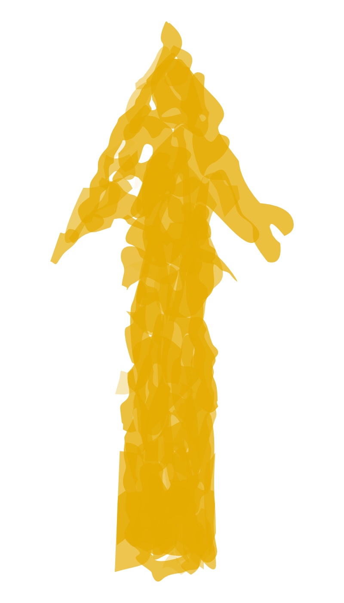
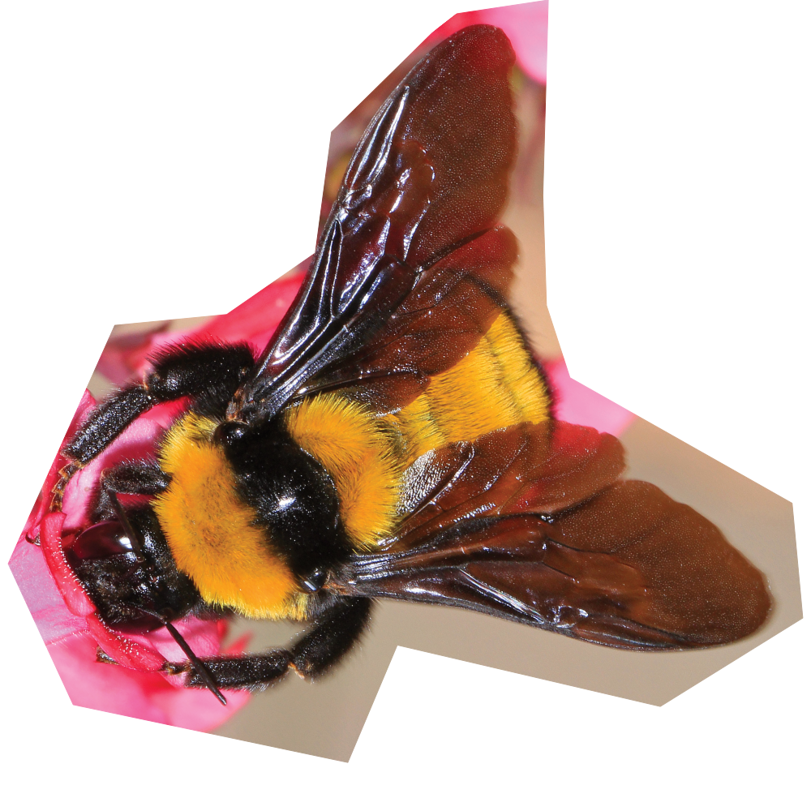

X
Info
Cerrar
ABEJORRO
BOMBUS SONORUS
Es cómo una abeja, pero más grande.
Se alimenta principalmente de néctar
y se supone que prefiere las flores rojas.
Come también áfidos, insectos y arañas.
Está buscando pólen dentro de flores de Jacaranda en el suelo del camellón.
